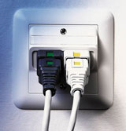
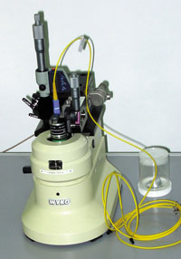
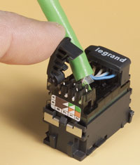
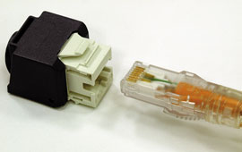
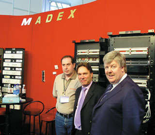
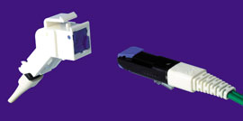
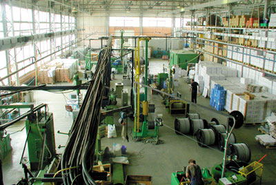

Ростислав Сергеев
За время, прошедшее после публикации в нашем журнале последней обзорной статьи по тематике СКС (№ 11'2002), в российском сегменте этого рынка произошли значительные перемены. Появились новые зарубежные игроки, изменились старые, расширяется круг отечественных производителей.
Трансформация "АйТи"
Наиболее крупные перемены произошли с первым отечественным производителем СКС - компанией "АйТи" (http://www.it.ru), о чем было объявлено в феврале на Форуме партнеров компании AVA Distribution (http://www.avalan.ru). В соответствии с продолжающимся в "АйТи" процессом реструктуризации идет выделение в новые независимые фирмы всех направлений бизнеса, кроме системной интеграции.
AVA Distribution унаследовала кабельное направление "АйТи-СКС" (производство и дистрибуцию), а также стала дистрибьютором других западных производителей СКС, кабельной продукции, измерительного и активного сетевого оборудования. Одна из самых заметных новинок в портфеле AVA - швейцарская СКС freenet Reichle&De-Massari (R&M). Это дорогой продукт, относящийся к той ценовой категории, которую в нашей стране пока практически единолично представляет СКС Systimax компании Avaya (http://www.avaya.ru).
На территории нашей страны поставками СКС R&M freenet c 1998 г. занималась московская компания "Рематель" (http://www.rematel.ru), имевшая статус официального представителя швейцарской фирмы. Кроме того, продукция R&M поступала клиентам по ОЕМ-соглашению с корпорацией IBM (СКС ACS). Продукты R&M, особенно медные и оптические кроссы, хорошо знакомы отечественным связистам и пользуются у них популярностью. По словам генерального директора "Рематель" Равиля Абдулина, их можно найти практически на каждой городской АТС, а в последнее время они применяются в системах широкополосного доступа в Интернет (на базе технологии ADSL).
Тем не менее в общем обороте швейцарской фирмы, который составляет около 170 млн долл., более половины приходится именно на СКС. До 1998 г. это были OEM-поставки для IBM ACS, а с 1998 г., продолжая сотрудничество с IBM, R&M вышла на рынок СКС с собственной торговой маркой freenet. Сотрудничество с "Рематель" началось немного раньше, в 1995-96 гг., и было ориентировано главным образом на WAN-продукты. Хотя "Рематель" реализовала немало проектов с использованием freenet, однако ее успехи в продвижении СКС R&M были явно скромнее, чем на соседней Украине. Там на долю СКС freenet приходится почти 40% рынка, в то время как в России, по оценкам британской компании BSRIA, доля швейцарского продукта составляет около 1%. В апреле 1997 г. на Украине зарегистрировано дочернее предприятие - фирма "Райхле и Де-Массари Украина" с офисами в Киеве и Одессе, а в сентябре 1999 г. R&M получила статус национального производителя благодаря размещению производства металлоконструкций и электротехнических элементов защиты оборудования по току на оборонных заводах Украины.
AVA стала партнером киевского представительства R&M по LAN и с помощью хорошо налаженной партнерской сети "АйТи-СКС" (AVA не только сохранила ее, но даже увеличила на 10%, и теперь у нее около 500 партнеров в СНГ, несколько десятков "золотых" партнеров и восемь региональных складов) надеется в течение ближайшего года увеличить долю freenet на российском рынке СКС до 5%, существенно потеснив основного игрока на рынке дорогих СКС - компанию Avaya Communication, которой принадлежит почти 30% российского рынка СКС в денежном выражении. Увеличивать и далее число партнеров AVA надеется за счет крупных системных интеграторов, с которыми компания "АйТи" раньше не работала. С помощью продуктов R&M для телефонии (VS Standart и VS Compact) AVA рассчитывает выйти и на рынок телекоммуникационных кабельных продуктов для сетей общего пользования.
В числе основных технических особенностей СКС freenet - экранированный и неэкранированный варианты кабельной системы категорий 5е и 6, модульный принцип, вертикальные коммутационные панели и развитая система кодировки, система защиты от ошибок коммутации и защита коммутируемых соединений по классу IP54.
В СКС R&M freenet используется коннектор RJ45 собственной разработки с жесткими врезными контактами, конструкция которых основывается на V-образной щели в пластине из высококачественной сталистой бронзы с поверхностной пассивацией серебром. Контакт нечувствителен к разбросу диаметров проводов и позволяет использовать кабели c медной жилой диаметром от 0,4 до 0,65 мм. Допускаются многократные перезаделки провода в одном контакте (до 250 в телефонный плинт и до 100 в модуль RJ45). Монтаж модулей RJ45 проводится без применения специального инструмента и очень быстро (менее 2 мин). В состав системы входят коммутационные панели емкостью от 16 до 60 портов RJ45, а также широкий спектр розеток емкостью 1-12 портов RJ45. Развитая цветовая и текстовая кодировка соединений существенно увеличивает удобство обслуживания кабельной системы в процессе эксплуатации. Набор ключей-адаптеров RJ45 Data Safe Lock, которые надеваются на вилку и розетку модульного разъема, обеспечивает механическую блокировку неправильного соединения, а также кодировку (с помощью специальных цветовых вставок) различных видов сервисов или пользователей. Для защиты от случайного разъединения применяются защитные клипсы Safe Clip и рамки Plug Guard. Дополнительная визуальная индикация обеспечивается специальными цветными накладками и клипсами.
|  | Разъемы RJ45 Data Safe Lock Reihle&DeMassari.
|
В системе не используются широко распространенные коммутационные панели типа 110, вместо них R&M предлагает различные варианты собственной конструкции. Допускается использование коммутационных шнуров, изготовленных исключительно на заводе в Швейцарии. Компания выпускает исключительно пассивное телекоммуникационное оборудование и очень строго следит за качеством. Основной ее принцип гласит: "Производить только то, что можно сделать лучше других".
Старый друг...
Тем не менее "АйТи-СКС" остается флагманским продуктом компании AVA. Этой СКС принадлежит около 9% российского рынка, а в общем обороте AVA в 9 млн долл. она дает около 35%. Теперь продукт не принадлежит компании "АйТи", и этот системный интегратор, так же, как и другие партнеры, приобретает "АйТи-СКС" у AVA. Правда, по словам генерального директора AVA Алексея Сивидова, "АйТи" - самый крупный партнер, но если другие партнеры обеспечат такие же объемы продаж, то получат аналогичные с "АйТи" условия. По оценке г-на Сивидова, по качеству этот продукт относится к среднему классу, а по ценам приближается к продуктам из дешевого класса тайваньского и китайского производства.
В составе семейства три специализированных продукта - "Гига-Система Ай-Ти СКС", "АйТи-СКС-Мини" (для систем с числом портов до 50) и "АйТи-СКС-Видео". Сейчас выпускается примерно 50 наименований продукции, продолжается совершенствование традиционных изделий и разрабатываются новые их виды. В состав первой отечественной СКС включены специализированные продукты: "Оптибокс" - бесшнуровое оптическое решение для небольших удаленных групп и отдельных пользователей, преобразователи среды от Microsens и экранированная система на базе компонентов Corning.
Основной удел "АйТи-СКС" - небольшие и среднего размера системы (продажи для проектов на 50-150 портов дают 38% оборота, на 150-500 - еще 24%), в то время как для крупных проектов чаще используются СКС более высокой ценовой категории.
Гарантия на СКС увеличилась до 20 лет и стала трехуровневой. На компоненты предоставляется пятилетняя гарантия, на канал - 15-летняя (отменена платная сертификация), и еще введена системная гарантия на 20 лет при условии платной сертификации (но платить каждому партнеру придется только за три первые сертификации, дальше эта процедура выполняется бесплатно).
Кроме того, претендуя на максимально широкий охват кабельного рынка, AVA заключила партнерское соглашение и с фирмой Molex PN (http://www.molexpn.ru), давно представленной на российском рынке. Хотя в отчете BSRIA доля СКС этой фирмы на российском рынке оценивается как весьма незначительная (2%), по словам регионального торгового представителя Molex PN Игоря Павлова, реальная рыночная доля фирмы составляет в России не менее 10% (учитывая объем поставок в 200 тыс. портов). Этот продукт из среднего ценового диапазона предназначен для тех клиентов, которым обязательно нужна система западного производства.
Аналогичной широтой охвата спектра пассивного оборудования и концентрацией именно на нем может похвастаться, пожалуй, еще одна российская фирма - "Сонет Текнолоджис" (http://www.sonet.ru). В ее арсенале - продукция зарубежных и отечественных вендоров различных ценовых категорий, а также собственное производство оптических коммутационных шнуров на дочернем предприятии SonLex (http://www.sonlex.ru).. В настоящее время этот "заводик", развернутый на базе оборудования и компонентов американской компании Molex FO, - один из самых технически оснащенных на отечественном рынке. В частности, для контроля качества используется интерферометр WYKO, что позволяет контролировать качество обработки оптических контактов с точностью до 1 нм. По словам генерального директора фирмы Александра Московченко, таких устройств в России пока только два (второй находится в сертификационной лаборатории Минсвязи). SonLex выпускает около 500 оптических шнуров в неделю, которые поступают к заказчикам намного быстрее, чем из-за границы, а стоят значительно меньше.
|  | Интерферометр WYKO используется для контроля качества в компании SonLex.
|
Мировой и российский рынки СКСОбщий объем мирового рынка СКС - около 3,8 млрд долл.; распределение его по регионам приведено на рис. 1.
Объем российского рынка СКС составляет около 40 млн долл., 1,2 млн портов. Доли на нем СКС различных ценовых категорий показаны на рис. 2.
В отличие от европейского рынка, где доля неэкранированной витой пары (UTP) немногим больше половины (52%), около трети приходится на экранированную витую пару FTP и 14% на STP/PiMF, в нашей стране более 90% составляет UTP и примерно по 4% приходится на долю систем двух экранированных типов. Согласно прогнозу, между 2001 и 2005 г. ежегодный прирост рынка составит около 10%, и к 2005 г. его объем приблизится к 55 млн долл. Источник: BSRIA, 2002. |
От электротехники и кабельных каналов
Прежде российское представительство известной французской фирмы Legrand (ww.legrand.ru) поставляло своим партнерам главным образом электротехнические изделия, а на рынке корпоративных компьютерных сетей компания в первую очередь была известна кабельными каналами. В мае Legrand вышла на рынок СКС с собственным продуктом - LCS категорий 5 и 6. Теперь компания предлагает полный спектр изделий для организации кабельной системы здания: кабельные компоненты и шкафы для слаботочной и силовой проводки, кабель-каналы, лотки, а также защитно-коммутационное электрооборудование.
Для монтажа СКС LCS не требуется специальный ударный инструмент, кабель в розеточном модуле RJ45 tool less (см. фото) фиксируется с двух сторон специальными защелками. Ножи разъема входят в контакт с проводником под углом 130°, обеспечивая минимальное разрезание изоляции. На розетке, куда вставляется модуль, предусмотрены специальные контакты, позволяющие использовать их с вилками RJ11, RJ12 и RJ45 без деформации и повреждения контактов. Другая особенность LCS - модульные коммутационные панели. Четыре коннектора RJ45 можно объединить в одну вставку, а затем скомпоновать до шести таких блоков в одну патч-панель. Это значительно упрощает сочетание на каждой панели различных типов кабелей (UTP, FTP, SFTP). LCS отличает разнообразие дизайна информационных розеток, от экономичной Mosaic до бизнес-серии Sagane.
|  | Подводка кабеля к универсальной розетке RJ45 производства Legrand.
|
Гарантийная программа предусматривает гарантию трех видов: 20-летнюю расширенную и системную на оборудование кабельных систем, установленное авторизованными партнерами компании, а также пятилетнюю дополнительную гарантию на оборудование телекоммуникационных помещений.
Как известно, российское представительство американского производителя СКС Ortronics (см. "BYTE/Россия" No 3'2003, No 11'2002) находится на территории представительства компании Legrand, и теперь продвижением LCS будут заниматься те же специалисты, которые прежде занимались Ortronics. Французские продукты чуть дешевле американских, но попадают в ту же самую среднюю ценовую категорию, в которой находятся большинство западных вендоров СКС, присутствующих на российском рынке.
Новый курс Krone
Продукция германской фирмы Krone (http://www.krone.ru) хорошо известна российским связистам, работающим на сетях общего пользования. Семейство AccessNET - кроссовое оборудование для медных и оптоволоконных кабелей, распределительные шкафы и коробки, элементы защиты линий и многое другое - давно с успехом применяется в нашей стране.
На выставке "Связь-Экспокомм" компания продемонстрировала еще один новый перспективный продукт семейства AccessNET, предназначенный для использования в сетях широкополосного доступа, - ADSL-сплиттер LSA-Plus Direct. Это устройство предназначено для разделения высокочастотных ADSL-сигналов и обычных низкочастотных голосовых. Оно рассчитано на восемь телефонных линий и устанавливается в существующие кроссовые шкафы и стойки, при этом в сплиттер можно интегрировать схему защиты от повышенного напряжения.
Тем не менее в ассортименте продукции Krone давно присутствует и другое семейство, предназначенное для построения сетей передачи данных внутри зданий. СКС PremisNET позволяет строить полноценные локальные компьютерные сети категорий 5e и 6. Поэтому вполне естественно, что российские фирмы, имеющие давние партнерские связи с Krone и работающие одновременно в сфере и телефонных, и компьютерных сетей, обратили внимание на эту СКС.
По словам сотрудника московского представительства компании Krone Сергея Монастырева, активно поставками PremisNET занимаются три российские фирмы - НЭЛТ, "ЭкспрессСвязьСервис" и "РТА-Инжиниринг", а число сертифицированных специалистов-инсталляторов в России пока невелико. Для проведения курсов и обучения преподавателей в Москву неоднократно (в феврале прошлого года, а также в апреле и июне нынешнего) приезжал Джеффри Холландс, эксперт по программам обучения из берлинского офиса Krone GmbH. В 2002 г. курсы проходили в офисе компании "РТА-Инжиниринг" (http://www.rta.ru), а в нынешнем году - на базе учебного центра компании "ЭкспрессСвязьСервис" (http://www.ecs.net.ru). Последний по итогам тренинга преподавателей "Курс сертифицированного инсталлятора Krone PremisNET" в конце июня получил статус авторизованного учебного центра Krone.
Программа обучения состоит из семи частей и включает теоретические и практические занятия по следующим темам: "Гарантийная программа Krone", "Стандарты и продукты СКС Krone", "Типы кабеля, используемые в СКС (UTP, FTP, STP, волокно)", "Заделка модулей Krone (НК, PCB) категории 5е", "Заделка модулей Krone (KM8) категории 6", "Методы установки" и "Тестирование медной и оптической проводки".
В семейство PremisNET входит полная линейка продуктов для построения слаботочной кабельной инфраструктуры здания самых разных масштабов: шкафы и стойки, коммутационные панели для телефонии (аналоговой и ISDN) и компьютерной сети, оптический и медный кабель категорий 3, 5, 5е и 6, коммутационные шнуры, соединители, разъемы и розетки всех типов, специальный монтажный сенсорный инструмент LSA-Plus, точки концентрации (Consolidation Box) и распределительные модули (MUTO Distribution Box). Специально для рынка SOHO выпускается законченное компактное сетевое решение - распределительные шкафы MiniLAN в корпусе стандарта 10 дюймов.
Значительное внимание в курсе уделено новому модельному ряду КМ8 категории 6 и новому кабельному узлу (Cable Manager), в котором реализована патентованная технология LSA для заделки кабелей UTP и STP. Для обучения работе с новым разъемом в программе подготовки предусмотрен специальный видеофильм, который остается у слушателей вместе с презентациями на компакт-диске (он выдается вместе с бумажной документацией по курсу). В дополнение к оригинальному англоязычному курсу значительная его часть очень профессионально переведена на русский язык и также записана на CD.
|  | Разъем Krone KM8.
|
В конце обучения проводятся тесты, в случае успешной сдачи которых слушатели получают сертификаты сертифицированных инсталляторов Krone. На установленное такими инсталляторами оборудование фирма дает 20-летнюю гарантию. Для этого после тестирования установленной СКС компания-инсталлятор и пользователь вместе заполняют специальную форму, которая вместе с результатами тестов отсылается в штаб-квартиру Krone в Берлине, и только после тщательной проверки выдается соответствующий гарантийный сертификат. Одно из существенных условий получения гарантии состоит в том, что срок установки любого элемента СКС не должен превышать 12 месяцев с момента его приобретения.
Во второе столетие с 10 Gigabit
В конце апреля торжественно отметила свое столетие компания Siemon (http://www.siemon.com), которая представлена на российском рынке двумя своими партнерами - компаниями ICS (http://www.intelbuild.ru) и "Мэйдекс" (http://www.madex.ru). В мартовском номере (см. "BYTE/Россия" No 3'2002, с. 48) наш журнал опубликовал интервью с Робом Тэнсли, директором Siemon по продажам в регионе EMEA, проходившее в московском офисе компании ICS. На выставке "Связь-Экспокомм", которую г-н Тэнсли посетил вместе со своим коллегой, управляющим директором Siemon EMEA Кейтом Астином, беседа состоялась на стенде петербургской компании "Мэйдекс".
|  | На стенде "Мэйдекс" (слева направо): Михаил Беляев ("Мэйдекс"), Роб Тэнсли и Кейт Астин (Siemon).
|
В год своего столетия, несмотря на продолжающийся уже около двух лет кризис в телекоммуникационной отрасли, эта американская фирма начала интенсивную глобальную экспансию, открыв офисы во Франции, Германии, Италии и Японии. В ответ на растущие потребности рынка фирма выпустила новый продукт - систему 10Gip, которая гарантированно обеспечивает пропускную способность 10 Гбит/с. В состав решения входит оптическая система XGLO и продукты для меди TERA и Category 6e. TERA, в которой используется одноименный разъем нового поколения, обеспечивает передачу информации на частотах до 1,2 ГГц и позиционируется как продукт категории 7, а так называемые продукты "усиленной" категории 6 - на частотах до 625 МГц.
И хотя стандарт на "медный" 10 Gigabit Ethernet вряд ли будет принят в ближайшие два-три года и активного сетевого оборудования для него пока нет, представители Siemon все же считают, что пользователям не придется через несколько лет заменять кабельную инфраструктуру для работы этого приложения.
Оптическая система XGLO полностью соответствует требованиям оптической версии стандарта 10 Gigabit Ethernet, принятой в августе прошлого года. Она рассчитана на использование одномодового и многогомодового 50/125 оптического волокна и применение SC- и LC-коннекторов.
Как полагает Кейт Астин, компаниям, которые живут не только днем сегодняшним, но думают и о более отдаленной перспективе, необходимо помнить следующее: в то время как жизненный цикл ПО составляет полтора-два года, компьютерного и сетевого "железа" - 3-5 лет, кабельные системы обычно меняют раз в 10-15 лет. Поэтому, чтобы не выполнять дважды дорогостоящую работу по замене кабельной проводки, лучше позаботиться о запасе сейчас.
Впрочем, у российских потребителей продукции Siemon, как считает директор компании "Мэйдекс" Михаил Беляев, пока задачи поскромнее. Здесь меньше думают о завтрашнем дне, и до 90% потребностей пока покрывается категорией 5e (см. врезку "Прошлое, настоящее и будущее категории 6"). В прошлом году фирма подписала с Siemon соглашение о лицензионном выпуске патч-кордов категории 5е. В его рамках выпускается широкий спектр шнуров с разъемами RJ45 и S110, который полностью покрывает потребности клиентов "Мэйдекс". Оптические патч-корды и медные шнуры для категории 6 по-прежнему закупаются у Siemon.
В отличие от ICS "Мэйдекс" не занимаемся проектами, а только дистрибуцией, ее штат составляет всего 20 человек.
Прошлое, настоящее и будущее категории 6В России...Михаил Беляев, директор компании "Мэйдекс" (http://www.madex.ru) Полтора-два года назад, когда появились продукты категории 6, был всплеск интереса к ним, и, наверное, в первый год доля их поставок составила около 20%, но потом интерес резко упал, поскольку у категории 6 нет практически никаких преимуществ перед 5е с точки зрения приложений, используемых нашими клиентами. Все, что идет на 6-й категории, идет и на 5е. Пока нет приложений, которые работают только на категории 6, так что сейчас ее доля в общем объеме продаж упала до 5%. Александр Широков, исполнительный директор компании "Диалог сети" (http://www.dialog-seti.ru) Наша фирма сотрудничает с тремя поставщиками кабельных систем - Avaya, Panduit, SMP. 60% приходится на Avaya, причем в поставках решений этого вендора доля СКС категории 5е составляет 90%, а категории 6 соответственно 10%. Сейчас Avaya существенно снизила цены на компоненты 5е, так что они теперь попадают в среднюю ценовую категорию. А GigaSpeed категории 6 сейчас почти в два раза дороже Systimax 5е. После всплеска интереса к категории 6 в начале и середине 2002 г. и некоторого роста ее доли год назад сейчас доля категории 5е в наших продажах выросла, а категории 6 - уменьшилась. ... и на ЗападеРоб Тэнсли, директор Siemon по продажам в регионе EMEA (http://www.siemon.com) Доля продаж СКС категории 6 у нашей компании близка к 50% и продолжает уверенно расти. Джеффри Холландс, эксперт берлинского офиса Krone GmbH (http://www.krone.com) По прогнозам Krone, ожидаемая продолжительность срока существования категории 5е составит примерно 5 лет (2000-2005), категории 6 - более 5 лет (с момента утверждения в 2002 г.), а доля поставок СКС категории 6 в 2003 г. достигнет 70%. |
3M - это так много...
Другой старожил рынка кабельной продукции, отметивший свое столетие в прошлом году, американская корпорация 3M (http://www.3m.com/ru) также недавно вышла на российский рынок СКС. Это не только самая старая из всех перечисленных выше фирм, но и самая крупная из них по размеру. В ее штате более 70 тыс. сотрудников, годовой оборот превышает 16 млрд долл., а спектр продуктов и услуг охватывает более десятка основных отраслей промышленности, бизнеса и даже здравоохранения. Компания начала работать в нашей стране в 70-х гг. и известна российским потребителям рынка ИТ своими дискетами и кассетами, а связистам - муфтами и соединителями для оптических волокон, а также кроссовым и измерительным оборудованием. Сейчас телекоммуникации обеспечивают российскому офису около 12% оборота.
На отечественном рынке СКС будет продаваться продукция подразделения Enterprise Telecommunications (корпоративные телекоммуникационные системы) - СКС Volition. Система была создана как исключительно оптическая СКС в 1998 г. В то время было весьма распространено мнение, что через 5 лет (т. е. как раз к сегодняшнему дню) стоимость медных и оптических решений для корпоративных кабельных систем почти сравняется. Однако действительность внесла свои коррективы, и стоимость оптики по-прежнему намного выше, чем меди. Поэтому в составе Volition сегодня присутствуют компоненты для медной проводки категорий 5е и 6, а также комбинированные решения. Впрочем, компания 3М очень давно занимается медно-жильными решениями и первой на телекоммуникационном рынке, еще в 1959 г., предложила технологию врезного контакта, которая в дальнейшем была усовершенствована в том числе многими другими фирмами. Одна из недавно представленных новинок - унифицированный медный соединитель RJ45 One Click.
Тем не менее ключевой элемент Volition - это оптический разъем VF-45 оригинальной конструкции, очень похожий внешне на привычный RJ45. В нем отсутствует дорогостоящий центрирующий наконечник из керамики и используется бесклеевая технология монтажа. Монтируется он подобно RJ45, а время установки одной розетки составляет всего несколько минут.
|  | Оптический разъем 3М VF-45.
|
Вторая отечественная СКС
С середины 2002 г. в Дубне на заводе компании Advakom (http://www.advakom.com) началось производство компонентов кабельных систем. Основные позиции в ассортименте продукции завода занимают кабель и металлические шкафы для установки телекоммуникационного оборудования, а также медные и оптические коммутационные шнуры. Компания Advakom начала свою деятельность в России в печально известный день 11 сентября 2001 г.; тем не менее в соответствии с планами в течение нескольких месяцев на территории бывшего завода по производству автомобильных ремней безопасности было установлено и запущено в работу оборудование для полного цикла производства неэкранированного кабеля UTP категории 5е. Существующие мощности позволяют выпускать 150 м готового кабеля в минуту, кроме того, в отдельных цехах изготавливаются медные и оптические коммутационные шнуры (несколько сотен в день). При этом используется кабель и коннекторы других фирм, в частности, Molex PN, Nexans и Foci. Всего на производстве занято около 70 человек, а возглавляет завод Пер Страндквист, хорошо известный российским потребителям кабельной продукции по своей прежней работе в компании NEC/CDT. Параметры выпускаемой продукции тщательно контролируются в специально созданной испытательной лаборатории. В июне датский сертификационный центр DELTA подтвердил соответствие системы качества Advakom международному стандарту ISO 9001.
|  | Цех производства кабеля завода Advakom.
|
Почти половину территории завода занимает цех металлоконструкций - линия по производству телекоммуникационных шкафов. Здесь также реализован полный цикл - конструирование, резка металла, штамповка, окраска, сборка, упаковка. Конструкторы, пришедшие из авиапрома (прежде в Дубне было масштабное производство военной авиационной техники, которое сегодня практически свернуто), без особого труда освоили новое производство и даже придумали новый способ соединения шкафов, позволяющий обходиться без стяжки по продольным элементам.
В дальнейших планах Advakom - производство кабеля категории 6, кабеля FTP и коммутационных панелей. Advakom не выпускает продукцию под собственной торговой маркой и будет продолжать специализироваться на поставках OEM-оборудования для локальных и международных брэндов. В числе партнеров - потребителей продуктов Advakom российские компании Lindex Technologies, Sonet Technologies и "Тайле", а также украинская "ИНВЕКС Телеком" и эстонская Mcom.
Большая часть компонентов второй отечественной СКС EuroLAN производится на заводе в Дубне, а ее дистрибуцией занимается компания Lindex Technologies (http://www.lindex.ru), для которой поставки кабельных систем - основное направление бизнеса (фирма владеет торговой маркой EuroLAN). Все компоненты СКС EuroLAN соответствуют стандартам и имеют, наряду с международными сертификатами, российские от "Ростеста", ВНИИПО "Пожтест" и ССЭ. Гарантийный срок, как и у большинства западных СКС, составляет 20 лет.
По словам Павла Бабаевского, заместителя директора Lindex, стоимость этой отечественной СКС на 30% ниже зарубежных аналогов, а сроки поставки - всего одна неделя.
Производители СКС, представленные на российском рынке
| Компания | Торговая марка СКС | Web-сайт |
| AVA Distribution | АйТи-СКС | http://www.avalan.ru |
| Lindex Technologies | EuroLAN | http://www.lindex.ru |
| 3M | Volition | http://www.3m.com |
| Advanced Electronic Support Products (AESP) | SignaMax Connectivity System | http://www.aesp.ru |
| Avaya Communication | Systimax | http://www.avaya.ru |
| Brand-Rex | MilleniuМ | http://www.brand-rex.com |
| ITT Network Systems & Services | LANConnect | http://www.ittnss.ru |
| Krone | PremisNET | http://www.krone.ru |
| Legrand | LCS | http://www.legrand.ru |
| Molex Premise Networks | PowerCat | http://www.molexpn.ru |
| Nexans | LANmark | http://www.nexans.com |
| Ortronics | Clarity | http://www.ortronics.com |
| Panduit | Integrity | http://www.panduit.ru |
| Reichle&De-Massari | Freenet | http://www.rdm.ch |
| RiT Technologies | CLASSix | http://www.rit.ru |
| Siemon | Siemon Cabling System | http://www.siemon.ru |
| Superior Modular Products (SMP) | Superior AXCESS 6 | http://www.superiormod.ru |
| Tyco Electronics AMP | Netconnect | http://www.ampnetconnect.ru |